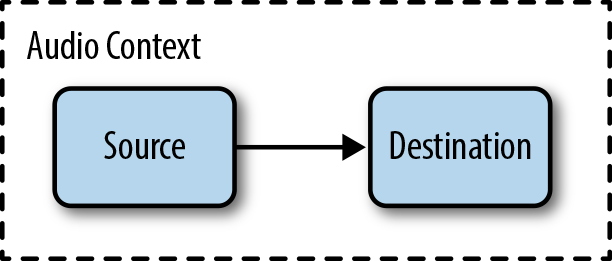
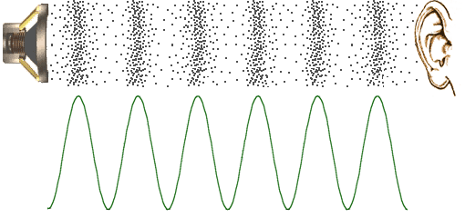
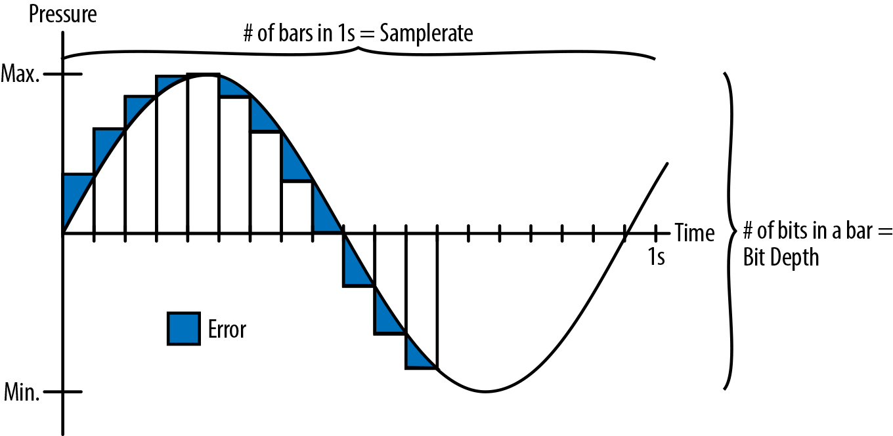
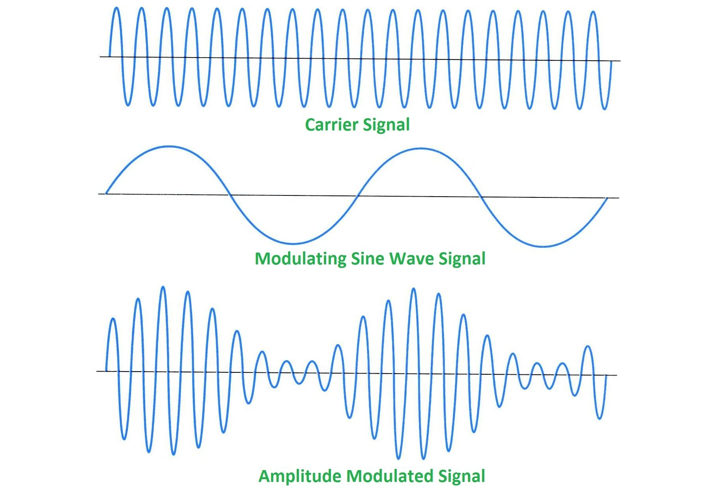

A Browser Dance Party
Unleash The Thunder

Beep Boop
Beep It Up


hh| -- -- -- -- -- -- -- -- | sn| -- -- sn -- -- -- -- -- | bd| bd -- -- -- -- -- bd -- |
Drop The BeatStop The Beat

Wob It UpStop The Wob
bd| bd -- -- -- -- -- -- -- | bd -- bd -- -- -- -- -- | bd -- -- -- -- -- -- -- | bd -- bd -- -- -- -- -- | sn| -- -- -- -- sn -- -- -- | -- -- -- -- sn -- -- -- | -- -- -- -- sn -- -- -- | -- -- -- -- sn -- -- -- | hh| -- -- hh hh -- -- -- -- | -- -- hh hh -- -- -- -- | -- -- hh hh -- -- -- -- | -- -- hh hh -- -- -- -- |